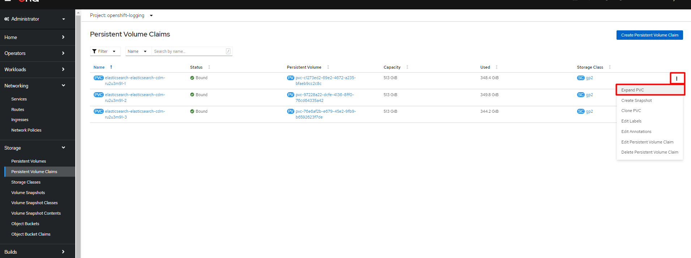
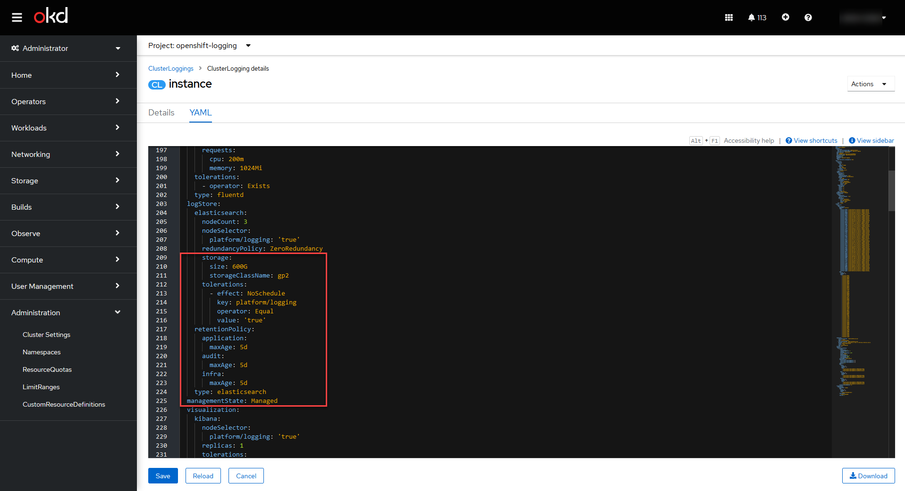
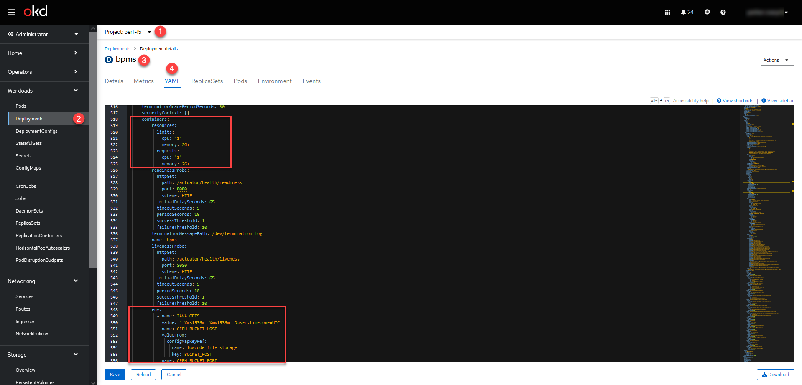
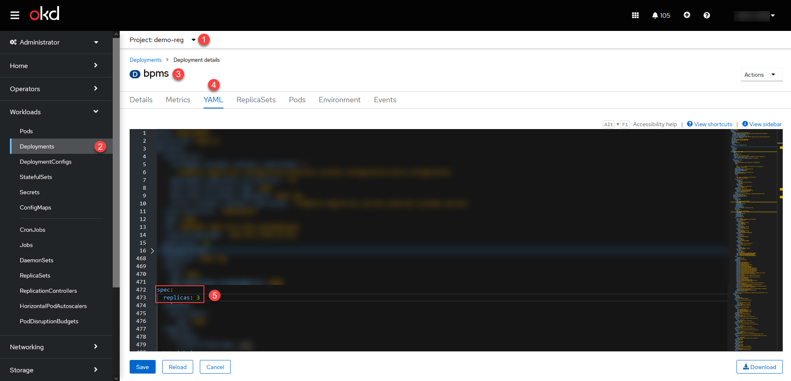
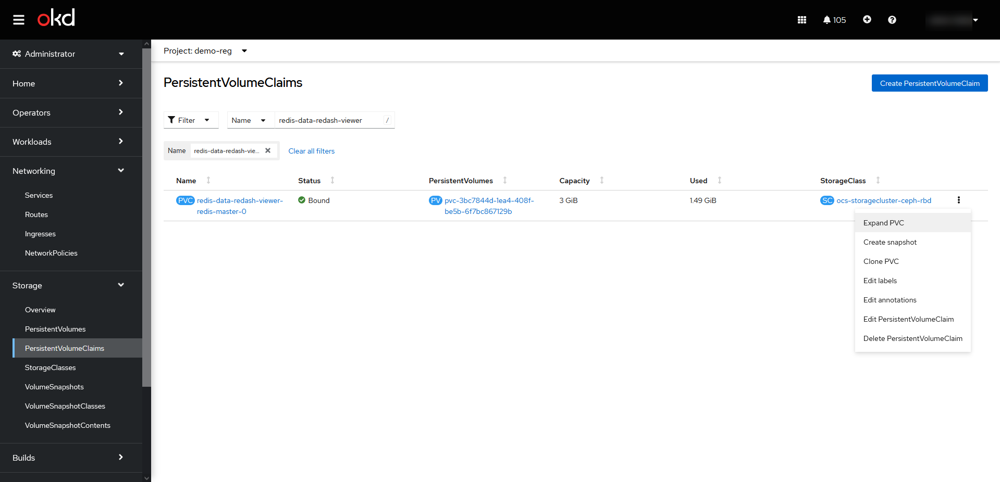
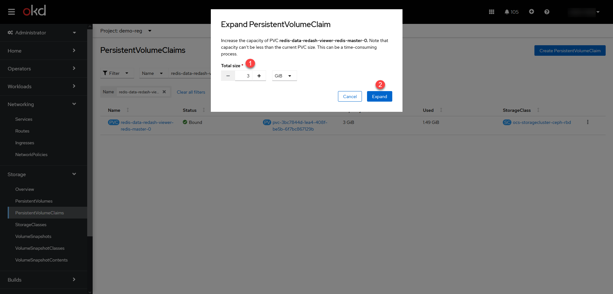
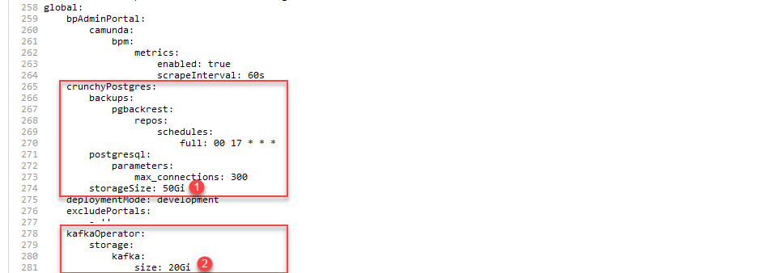
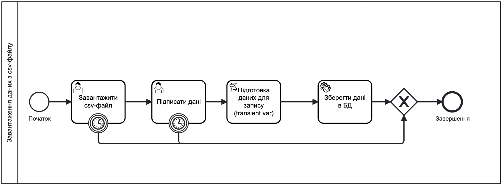

Launching the Platform and registries into production
- 1. Preparing the Platform environment
- 1.1. Basic prerequisites
- 1.2. Training the registry technical administrator
- 1.3. Planning backup storage for the Platform and registries
- 1.4. Planning storage space for central Platform components
- 1.5. Planning storage space for Ceph root volumes
- 1.6. Configuring monitoring alert notifications
- 1.7. Configuring basic dashboards in Kibana
- 1.8. Configuring backups for central components
- 1.9. Configuring Platform digital signature keys
- 1.10. Configuring and obtaining permission for the SMTP server in the AWS environment
- 1.11. Configuring network-level access restrictions to Platform administrative endpoints
- 1.12. Securing target environment infrastructure
- 1.13. Updating components
- 1.14. Migrating registries
- 2. Preparing the registry environment
- 2.1. Recommendations for forming registry support teams (L1, L2, L3)
- 2.2. Creating a registry and performing the initial verification
- 2.3. Updating registry components
- 2.4. Special steps for updating the registry
- 2.5. Common issues with registry user authentication and business process signing
- 2.6. Conducting a registry audit
- 2.7. Features of deploying regulations in the production environment
- 2.8. Recommended process for updating registry regulations
- 2.9. Configuring the SMTP server
- 2.10. Configuring integration with other registries and external systems
- 2.11. Configuring the registry for load handling
- 2.12. Planning storage space for the registry
- 2.13. Granting L2 access to the notification, monitoring, and logging system in the registry
- 2.14. Configuring backups
- 2.15. Configuring user registration, authentication, and access rights
- 2.16. Recommendations for avoiding abandoned business processes
- 2.17. Configuring rate limits
- 2.18. Configuring network-level access restrictions for registry components (CIDR)
- 2.19. Configuring custom DNS names
- 2.20. Assigning Platform and registry administrators
- 2.21. Deploying a geoserver and working with geospatial data in the registry
- 2.22. Initial data loading and additional data import
- 3. Recommendations for non-functional testing of registries on the Platform
- 4. Checklist for launching a public service
- 5. Lessons learned
1. Preparing the Platform environment
1.1. Basic prerequisites
To launch the Platform and registries into production, use only officially supported virtual infrastructures (currently AWS and VSphere).
An OKD cluster must be deployed on the selected infrastructure, using a version that meets Platform requirements according to the official recommendations (Digital Services Development Platform: requirements for OKD clusters).
Install and configure the Platform strictly according to the official documentation and deploy it only on supported environments:
1.2. Training the registry technical administrator
Onboarding for registry administrators is crucial for several reasons:
-
The role requires deep technical knowledge. Administrators must understand the registry structure and components, and be able to monitor and maintain the system. Training helps them acquire the necessary knowledge and skills to perform their tasks effectively.
-
Registry administrators are responsible for developing and implementing the registry regulations. This requires understanding the registry’s logic, data models, business processes, and user interfaces. Onboarding ensures administrators grasp these aspects to manage the system efficiently.
-
Covering all key aspects of the administrator’s role during onboarding greatly improves performance. When administrators clearly understand their responsibilities, goals, and expectations from the start, they can adapt faster and work more effectively in a large distributed system.
1.3. Planning backup storage for the Platform and registries
Backups of the Platform and registries are stored in a separate S3-compatible storage — MinIO. It is important to consider the size of backups when planning the available storage space and compute resources.
|
Accurately estimating the required storage space for backups is difficult because it depends on the specifics of each registry. The figures below provide approximate guidance. |
Backup requirements differ slightly based on the type of installation — AWS or VSphere:
-
AWS: Backups of OpenShift resources for core components require between 1 and 5 MB. Data stored in
PersistentVolumeClaimsis backed up using EBS Snapshots (https://docs.aws.amazon.com/AWSEC2/latest/UserGuide/EBSSnapshots.html), so no additional space is used in MinIO. The only exception is onePersistentVolumeClaimin theuser-managementnamespace, which requires about 5 MB on MinIO. -
vSphere: The size of OpenShift resource backups is similar to AWS. However, backups of
PersistentVolumeClaimsare stored in MinIO, with approximate sizes as follows:-
control-plane— 15 GB -
user-management— 12 GB -
control-plane-nexus— 100 GB -
grafana-monitoring— 10 GB
-
These figures represent the actual PVC sizes. For central components, plan approximately 140 GB for PVC data backups and an additional 10 GB for OpenShift resources (the 10 GB buffer is reserved for future growth).
Backup sizes for registries are the same for both AWS and VSphere. Each registry backup requires around 210 GB: 10 GB for OpenShift resources and 200 GB for PVC data.
Regarding replication: initially, plan up to 200 GB. As the registry grows, storage needs may increase to several terabytes.
1.4. Planning storage space for central Platform components
- Expand PVC
-
The central Platform components are stored on cloud-native persistent volumes. You can expand the disk space for these components via the OpenShift console under Storage > PersistentVolumeClaims >
Expand PVCwithin the corresponding namespaces:-
openshift-logging -
grafana-monitoring -
control-plane -
control-plane-nexus -
user-management(Keycloak database)
Figure 1. Example: Expanding storage for openshift-logging -
- Custom resource definitions
-
Additionally, update Custom Resource Definitions (CRDs) for certain components. For example, to expand storage for
openshift-logging:-
Open Administration > Custom resource definitions and locate ClusterLogging.
-
Select the Instance for the openshift-logging project.
-
Open the YAML configuration, find the
storage.sizeparameter, and adjust the disk size.
Figure 2. Example: Updating custom resource definitions for openshift-logging -
Each service initially runs with default disk size settings.
As an administrator, you can either keep these defaults or increase the volume size immediately if you anticipate higher usage.
The recommended increase is +50% of the original size.
For example, if the default disk size for openshift-logging is 400 GB, you may want to expand it to 600 GB at the initial stage.
|
|
For a detailed example of expanding storage, see the technical maintenance guide for the EFK stack: Expanding space for Elasticsearch |
1.5. Planning storage space for Ceph root volumes
The Ceph service is another central component of the Platform with its own specifics.
Root volumes for Ceph are stored in the openshift-storage project.
You can configure disk size for Ceph in the OpenShift console: go to the openshift-storage project, then Storage > PersistentVolumeClaims.
| The recommended initial disk space increase is +50%, similar to other central components. For example, if the default disk size for Ceph is 512 GB, you should consider expanding it to 750 GB. |
|
For more information about configuring the file system, see: |
1.6. Configuring monitoring alert notifications
Monitoring alert notifications are configured in the Grafana component. You must select a communication channel to receive alerts. We recommend using a Telegram chatbot.
|
This is the recommended basic monitoring notification setup. Alerts can be triggered from various dashboards. More advanced configurations can be performed by the Platform administrator as needed. |
| For more information, see registry-develop:registry-admin/grafana-monitoring/grafana-alerting-notifications.adoc. |
1.7. Configuring basic dashboards in Kibana
The Platform uses the EFK stack (Elasticsearch, Fluentd, Kibana) for event logging. The EFK stack is responsible for collecting, processing, and visualizing system event logs, helping ensure transparency and monitoring of system health.
The event logging subsystem is deployed in a separate OpenShift project called openshift-logging.
This approach isolates logging-related resources from other system components, enhancing security and stability.
Kibana provides an interactive interface to visualize all application logs across the Platform, allowing for effective event analysis and monitoring.
| For details, see Reviewing the Platform event logs (Kibana). |
1.8. Configuring backups for central components
The Platform supports two types of backups for central (infrastructure) components:
-
Manual backups (see details — Manual backing up and restoring central components).
-
Automatic backups based on a defined schedule (see details — Setting up the central components backup schedule and retention time).
After creating a backup, the central component environment can be restored directly from it.
1.9. Configuring Platform digital signature keys
The creation of digital signature keys and certificates occurs during Platform deployment (see details — Prerequisites for Platform deployment).
A general overview of Platform keys is available here: Configuring digital signature keys and certificates.
You can also update digital signature keys and certificates during Platform operation through the Control Plane interface (see details — admin:control-plane/system-keys/control-plane-platform-keys.adoc).
1.10. Configuring and obtaining permission for the SMTP server in the AWS environment
The Platform administrator must first configure the SMTP server. Follow the instructions provided in Configuring internal SMTP server.
As part of the setup procedure, it is critically important to complete the permission request for the SMTP server in the AWS environment. This step ensures the reliability and efficiency of email delivery.
By default, any outbound traffic on port 25 (SMTP) is blocked when the Platform is deployed in AWS.
You must submit a Request to remove email sending limitations to AWS Support. The request review time may take up to 48 hours.
1.11. Configuring network-level access restrictions to Platform administrative endpoints
In the Control Plane console under Platform management, the administrator can define a CIDR block to restrict external access to platform and infrastructure component routes.
| For more information, see admin:control-plane/cidr/control-plane-cidr-access-endpoints.adoc. |
1.12. Securing target environment infrastructure
The environment administrator is responsible for securing the target infrastructure according to applicable organizational policies.
1.13. Updating components
1.13.1. Special steps for updating the Platform cluster
In addition to the standard update procedure, each release may require special actions related to updating Platform components.
| Start the update process on the Special update steps page. During these steps, proceed with updating the infrastructure components. |
1.13.2. Updating Platform infrastructure components (updating cluster-mgmt)
| Start the update process on the Special update steps page. During these steps, proceed with updating the infrastructure components. |
The management of Platform infrastructure component updates is performed in the Control Plane administrative panel for Platform and registries.
The update process follows the GitOps approach.
| For more information, see Updating Platform infrastructure components. |
1.14. Migrating registries
Sometimes it is necessary to transfer a registry, along with its settings and resources, from one cluster to another.
The migration process involves restoring the registry from the latest backup and transferring it from Cluster A to Cluster B.
| For more information about migration, see Migration. |
2. Preparing the registry environment
2.1. Recommendations for forming registry support teams (L1, L2, L3)
- Mandatory points:
-
-
Scope of support:
-
Define the required support levels (L1, L1.5, L2, L3, etc.). Note that each level requires a separate set of skills and resources.
-
Outline the environments to be supported (Prod, Stage, etc.). The team must have sufficient experience working in these environments.
-
-
ITSM system for tracking support requests. We recommend using Jira Service Management from Atlassian (cloud solution).
-
Coverage hours (8×5, 16×5, on-call shifts, holiday schedules, etc.). Ensure availability during non-working hours and holidays.
-
Language support. The team must be able to communicate effectively in the required languages.
-
Expected volume of support requests. This helps determine the required team size.
-
Main business time zone. This is important for planning team working hours.
-
SLA/SLO/OLA requirements. Define the expected service quality levels.
-
Communication channels (tickets, phone support, etc.). The team must be ready to work through the required channels.
-
Tools and technology stack. The team must have expertise in the necessary technologies.
-
Number of system users. This also impacts the required team size.
-
- Additional points to consider:
-
-
Ticket reporting (tickets dump). Helps analyze user needs more effectively.
-
Size of the existing team (if any). Helps assess whether additional resources are needed.
-
Dependencies on third-party teams. Important for planning collaboration and coordination.
-
2.2. Creating a registry and performing the initial verification
After completing the admin:control-plane/registry-management/control-plane-create-registry.adoc, perform the following initial checks to ensure everything is set up and working correctly:
-
Obtain your login and password for OpenShift and the Control Plane from the Platform administrator.
-
Verify that the namespace for your registry has been deployed in OpenShift. You should see only your registry project.
-
Verify that all required pods and routes are available within the namespace.
-
Verify access to the registry’s administrative tools and check their general availability: Gerrit, Jenkins, Nexus, and Admin Portal.
-
Log in to Keycloak and verify that the registry realms are available, including:
-
-officer-portal -
-citizen-portal -
-admin -
-external-system
-
-
-
Verify access to the Control Plane and log in.
-
Ensure that you can see only your own registry in the Control Plane.
-
Verify that you can modify the registry configuration, for example, by adding a registry administrator.
-
Verify that authentication is working correctly.
-
In regional Ukrainian environment:
-
Create an officer user in Keycloak and log in to the Officer Portal using a qualified electronic signature (QES).
-
Log in to the Citizen Portal using a qualified electronic signature (QES).
-
-
In the global environment:
-
Create an officer user in Keycloak and log in to the Officer Portal using the basic login and password authentication.
-
Log in to the Citizen Portal using the basic login and password authentication.
-
-
| It is also helpful to review the admin:control-plane/registry-management/control-plane-edit-registry.adoc page. |
2.3. Updating registry components
The management of registry component updates is performed in the Control Plane administrative panel for Platform and registries.
The update process follows the GitOps approach, after completing Updating Platform infrastructure components (updating cluster-mgmt).
| For more information, see Updating registry components. |
2.4. Special steps for updating the registry
In addition to the standard update procedure, each release may require special actions related to updating registry components.
| For more information, see Updating the Platform and registries to version 1.9.6: Special steps. |
2.5. Common issues with registry user authentication and business process signing
| You can address these issues as follows: |
-
Check the digital signature key at https://id.gov.ua/sign.
-
Verify that the DSO pods of the registry and the
user-managementproject have the latest digital signature certificates installed.If the keys or certificates are outdated or not functioning correctly, they must be updated.
For more information about updating digital signature keys and certificates, see:
-
Another common issue is the presence of duplicate users. For example, the
<registry-name>-officer-portalrealm in Keycloak may have two users with identical attributes.
2.6. Conducting a registry audit
Before deploying the registry regulation into production, it is recommended to conduct a full registry audit.
An audit helps assess the quality of the developed regulation and identify potential issues that could affect the stability or efficiency of the registry.
Review the set of audit recommendations, grouped according to the Digital Registry Regulation structure.
Additionally, it is recommended to audit the registry’s resource configurations.
|
For more information about registry auditing: |
2.7. Features of deploying regulations in the production environment
- Regulations structure:
- Deploying regulations:
- Changing the deployment mode of regulations:
- Getting started prerequisites:
- Regulations publishing pipeline:
- Automatic validation during regulation updates:
- Regulations Administrator Portal:
- Other useful documents:
2.8. Recommended process for updating registry regulations
After the registry is deployed by the Platform administrator, the registry will have an empty Gerrit repository for its regulations.
The process for making changes to the regulations — either initially or later during updates — follows the GitOps approach and does not differ procedurally.
What is the GitOps approach?GitOps is an approach to managing infrastructure and deploying applications based on using Git version control. In GitOps, all configuration files, infrastructure descriptions, and application code are stored in a Git repository. Any changes to the infrastructure or application are made through commits to the Git repository. |
Files are updated locally, then pushed to the remote Gerrit repository. The publication pipeline tracks changes to the regulation directories, and when changes are merged into the master branch, the Master-Build-registry-regulations pipeline is triggered. This pipeline builds the entire codebase. Once completed, the changes take effect, and the regulation is updated to the latest commit version.
You can update the registry regulations using either an advanced or a simplified approach.
- Advanced approach
-
The advanced approach involves working directly with file directories, the Git system, Gerrit (using Git Bash console or similar tools), and Jenkins.
The update process:
-
Clone the empty Gerrit repository containing the registry regulations to your local machine.
-
In the registry-regulations directory, add the necessary files:
-
Create the registry data model (data-model).
-
Model business processes (bpmn).
-
Model UI forms for business processes (forms).
-
Define roles for your registry (roles).
-
Define access to business processes for specific roles (bp-auth).
-
Define other settings according to your registry regulations (notifications, extracts, global variables, etc.).
-
-
Run the following commands:
git add --all
git commit -m "commit message"
git push refs/for/master
-
Complete the code review process: First, an automated Jenkins check will run (MASTER-Code-review-registry-regulations). Then, an authorized administrator must approve the changes.
-
Perform a
git mergeinto themasterbranch of the Gerrit repository.
-
- Simplified approach
-
The simplified approach involves using the convenient web interface of the Regulations Administrator Portal.
The update process:
-
Log in to the Regulations Administrator Portal.
-
Create a new candidate version for your changes.
-
Add the necessary updates:
-
Create the registry data model (Tables).
-
Model business processes (Process models).
-
Model UI forms for business processes (UI forms).
-
Define other configuration settings required for your registry regulations.
-
-
Go to the Version overview tab and click
Apply changes to the master branch.This action automatically creates a change request, confirms it, and publishes the changes to the regulations.
-
|
For more information about working with regulations, see: Other useful documents: |
2.9. Configuring the SMTP server
The internal SMTP server is a Platform component designed to send notifications to end users.
During Platform installation, it is deployed in the smtp-server project.
| The Platform administrator must first configure the SMTP server itself (see Configuring and obtaining permission for the SMTP server in the AWS environment). |
Later, the registry administrator can configure a connection to this server to send email notifications to users. This can be done through the Control Plane interface by following the instructions in Configuring the mail server.
2.11. Configuring the registry for load handling
Each registry has specific tasks, workflow logic, and configurations, leading to certain services involved in performing these tasks to a greater or lesser extent.
Depending on the load on a particular registry, which directly depends on the number of requests from active users, the registry’s services require a certain amount of resources. They can be deployed in one or more instances.
|
For instance, when serving 1,500 active users over 1 hour, a hypothetical registry should have approximately the following configuration: Horizontal scaling registry configuration
|
Depending on the needs of your registry, you can modify configurations for certain services. Precisely, you can:
- Scale resources vertically
-
This operation can be done in two ways:
-
(Primary method) In the Control Plane administrative panel, in the section for managing resources for services.
You can learn more about this on the admin:control-plane/registry-management/control-plane-registry-resources.adoc page. -
(Alternative method) In the OpenShift console:
This approach allows you to add resources to specific services quickly, but over time, the settings will revert to those specified in the Helm chart. -
Select the project with your registry > Workloads > Deployments > Open the service settings > YAML.
-
In the
spec.containers.resourcessection, you can set the required configuration parameters for CPU and memory. -
In the
spec.containers.resources.envsection, you can define environment variables for your applications, such asJAVA_OPTS, Ceph variables, etc.
-

-
- Scale resources horizontally
-
Horizontal scaling can be done by increasing the number of replicas of certain services.
-
Currently, you can scale horizontally like this:
This approach allows you to add the number of replicas for desired services quickly, but over time, the settings will revert to those specified in the Helm chart. -
Select the project with your registry > Workloads > Deployments > Open the service settings > YAML.
-
In the
spec.replicassection, you can set the required number of replicas for the selected service.Example. Horizontally scaling the bpms service to three replicasspec: replicas: 3

-
Setting up horizontal scaling automatically (Horizontal Pod Autoscaler) will be possible in the Managing registry resources section of the Control Plane administrative panel in upcoming releases, starting with 1.9.7. -
2.12. Planning storage space for the registry
Registry components are stored on Ceph storage volumes. You can configure the available disk space for these components via the OpenShift console under Storage > PersistentVolumeClaims within your registry project.
Disk sizes can be adjusted based on your needs. There are three approaches for expanding storage space for different registry services:
- I.Expand PVC
-
This is the simplest and most common approach for most registry components.
You can expand disk space via the OpenShift console under Storage > PersistentVolumeClaims >
Expand PVCin the corresponding project (namespace) — for example,demo-reg.Figure 3. Expanding disk space for theredis-data-redash-viewercomponentFigure 4. Expanding disk space for theredis-data-redash-viewercomponent - II. Expand PVC + deploy-templates/values.yaml
-
This approach applies to specific data-related services, such as
crunchyPostgresandkafka.To expand disk space for these components:
-
(Optional) Open the OpenShift console and navigate to Storage > PersistentVolumeClaims in your registry project — for example,
demo-reg. Then clickExpand PVC. -
In the central Platform Gerrit, locate the repository for your registry.
-
Switch to the
masterbranch and open the deploy-templates/values.yaml configuration file.-
For
crunchyPostgres, set the storage size using theglobal.crunchyPostgres.storageSizeparameter. -
For
kafka, set the storage size using theglobal.kafkaOperator.storage.kafka.sizeparameter.
Updating storage size for crunchyPostgres and kafka componentsglobal: crunchyPostgres: storageSize: 50Gi kafkaOperator: storage: kafka: size: 20Gi -
Figure 5. Updating storage size for crunchyPostgres and kafka components -
- III. Expand PVC + deploy-templates/values.gotmpl
-
This approach applies to some critical services, such as
gerrit,jenkins,nexus, andregistryRegulationManagement.To expand disk space for these components:
-
(Optional) Open the OpenShift console and navigate to Storage > PersistentVolumeClaims in your registry project — for example,
demo-reg. Then clickExpand PVC. -
In the central Platform Gerrit, locate the repository for the target registry.
-
Switch to the
masterbranch and open the deploy-templates/values.gotmpl configuration file.-
For
gerrit, set the storage size using thegerrit.storage.sizeparameter.Example: Expanding storage for the gerrit componentgerrit: storage: size: 10Gi -
For
jenkins, set the storage size using thejenkins.storage.sizeparameter.Example: Expanding storage for the jenkins componentjenkins: storage: size: 30Gi -
For
nexus, set the storage size using thenexus.storage.sizeparameter.Example: Expanding storage for the nexus componentnexus: storage: size: 150Gi -
For
registryRegulationManagement, set the storage size using theregistryRegulationManagement.volume.sizeparameter.Example: Expanding storage for the registryRegulationManagement componentregistryRegulationManagement: volume: size: 20Gi
-
-
|
Each service is deployed with a default disk size. As an administrator, you can leave the defaults or, if you know that the allocated size is insufficient for your needs, expand the volume immediately. The recommended initial expansion is +50%.
For example, if the default disk size for the |
|
If you are unsure which expansion method to use, start with the first one — expand the disk space via Then trigger the Jenkins pipeline MASTER-Build- |
|
We also recommend reviewing the storage configuration guidelines on the following pages: |
2.13. Granting L2 access to the notification, monitoring, and logging system in the registry
Grant access rights to the cluster-mgmt component in the Platform Management section of the Control Plane.
All you need to do is create a Platform administrator — the appropriate permissions will be assigned automatically.
|
This rule applies only if business requirements allow L2 engineers to act as Platform administrators. Typically, this will be acceptable, but there may be cases where different registries on the same Platform have separate L2 teams. In such cases, access restrictions might need to be considered. |
| For more information, see admin:control-plane/platform-management/settings/control-plane-assign-platform-admins.adoc. |
2.14. Configuring backups
2.14.1. Configuring registry backups
The Platform supports:
-
Manual backups (see Manually back up and restore a registry instance)
-
Automatic scheduled backups (see Managing the registry backup schedule)
After a backup is created, the registry can be restored directly from it.
2.14.2. Configuring registry object bucket replication
The Platform uses two types of storage:
-
MinIO — for Platform component backups (Velero).
-
Ceph OBC (Object Bucket Claims) — for active registry data.
|
Velero does not cover Ceph OBC buckets. A separate object bucket replication mechanism is used to protect this data. |
Replication is configured via the Control Plane and copies Ceph OBC data to S3-compatible storage:
-
By default — to MinIO.
-
With custom settings — to another S3-compatible storage (Amazon S3, GCS, etc.).
| For more details, see Ceph OBC data replication. |
2.15. Configuring user registration, authentication, and access rights
In the global region, registry users are authenticated through a standard login and password form. Qualified electronic signatures (QES) are not used.
User registration and authentication are managed via the Keycloak service:
-
Administrators manually create user accounts in the officer portal and citizen portal realms.
-
Alternatively, self-registration can be enabled in Keycloak by switching on the User registration option in the realm settings.
When creating a user, the administrator specifies:
-
Username and Email
-
First Name and Last Name
-
Temporary password (must be changed at first login)
-
One or more roles manually assigned to the user (e.g.,
officer,citizen, or custom roles)
Authentication is performed through a login form in the Officer or Citizen Portal.
| For more information, see User registration in the registry. |
2.15.1. Configuring user roles and business process access
Registry roles and access rights are configured at the regulations level:
-
User roles are defined in the
roles/officer.ymlandroles/citizen.ymlfiles. -
Access to business processes is defined in the
bp-auth/officer.ymlandbp-auth/citizen.ymlfiles.
When roles are defined in the registry configuration, they become available for assignment in Keycloak. After registration and authentication, users can access only those business processes assigned to their roles.
This access control follows the Role-Based Access Control (RBAC) model.
| For more information, see Deploying registry regulations in Gerrit and Business process modeling and access control (RBAC). |
2.16. Recommendations for avoiding abandoned business processes
In the context of the Camunda Engine, "abandoned" or outdated business processes refer to processes that were started but not completed. This may happen when a business process is interrupted, canceled, or terminated due to an error, exception, or other issues.
There are several ways to address this:
-
Prevent abandoned processes through proper modeling. Use Timer Boundary Events of type Duration attached to each User Task to automatically complete or terminate inactive processes.
Figure 6. Business process with a timer boundaryIt is recommended to set timers longer than 14 days because business process logs are retained in Elasticsearch for 14 days by default. After that, logs are deleted, making it impossible to identify the root cause of issues. -
For more information about timers, see Timer Event.
-
For best practices on configuring timers, see Launching a business process by schedule.
-
-
If abandoned processes already exist, use the Business Process Administration Portal (Camunda Cockpit) to manually delete them one by one.
For details, see Administering business processes in Camunda Cockpit. -
If there are many abandoned processes and manual deletion becomes impractical, use scripts to bulk delete them.
For more information, see registry-develop:registry-admin/abandoned-processes/delete-abandoned-processes.adoc.
2.17. Configuring rate limits
API rate limits allow you to restrict the number of HTTP requests to a service or route within a specified time period.
The rate-limiting mechanism is implemented using the Rate-Limiting plugin for Kong API Gateway. A security administrator with the appropriate access rights can configure the necessary limit values.
2.18. Configuring network-level access restrictions for registry components (CIDR)
In the Registries section of the Control Plane console, an administrator can define a CIDR to restrict external access to administrative endpoints, as well as the Officer and Citizen Portals of the registry.
| For more information, see Restricting access to registry components. |
2.19. Configuring custom DNS names
You can configure custom DNS names separately for:
-
Officer Portal —
officer-portal -
Citizen Portal —
citizen-portal -
Authentication and authorization service —
keycloak:-
Set the custom DNS at the Platform management level.
-
Use the defined DNS names in the registries.
-
| For more information, see admin:control-plane/custom-dns/custom-dns-overview.adoc. |
2.20. Assigning Platform and registry administrators
First, authenticate using the system user KubeAdmin and create the initial Platform administrator.
After that, the Platform administrator can independently add new Platform administrators via the Control Plane interface.
| For more information, see admin:control-plane/platform-management/settings/control-plane-assign-platform-admins.adoc. |
Once a Platform administrator is created, they can create a registry and assign the first registry administrator. Afterward, the registry administrator can independently add new registry administrators through the Control Plane interface.
| For more information, see Creating registry administrators. |
2.21. Deploying a geoserver and working with geospatial data in the registry
| Required only for registries that need to work with geospatial data. |
Registry administrators and regulation developers can configure geospatial data handling.
At the core of the solution is the Geoserver component — an open-source server that allows retrieving data from databases in the GeoJSON format.
| For more information, see Working with geodata in the registry. |
2.22. Initial data loading and additional data import
Initial data loading or additional data import into the database can be performed through the data structure modeling procedure: Initial loading of registry data.
|
Additional useful resources:
|
3. Recommendations for non-functional testing of registries on the Platform
3.1. Performance testing
Platform performance testing is conducted by EPAM for each release using a predefined OpenShift cluster configuration. Testing is performed separately for each deployed registry, with a specific number of active users under planned full load during business hours.
Performance testing is carried out using Carrier — a comprehensive tool that helps measure, analyze, and optimize the performance of Platform services and deployed registries.
| For more information about the testing results, see testing:performance-testing/perf-report/perf-report-overview.adoc. |
3.2. Security testing
The Digital Services Development Platform is built based on the DevSecOps secure software development methodology. Automated security checks for known vulnerabilities are performed continuously. Regular security testing is conducted, including penetration testing, threat modeling, and automated scanning.
| For more information about the Platform’s security testing, see Security testing. |
4. Checklist for launching a public service
|
This checklist mainly applies to launching a public service based on a registry and integrating with external systems such as Diia (a Ukrainian government mobile app and administrative portal) and others. Note that this checklist is not exhaustive and can be extended if needed. Additionally, this checklist can be adapted and used when preparing for the launch of any registry developed on the Platform. |
- 1.Functionality
-
-
Verify that all key service features and capabilities work as intended.
-
Test all user interactions and workflows to ensure a seamless user experience (UAT-Beta).
-
Conduct thorough functional testing to identify any vulnerabilities or bugs.
-
- 2.Performance
-
-
Estimate the expected request flow for load testing requirements: during the first days after launch and during regular operations.
-
Conduct load testing to assess how the service handles heavy user loads and concurrent requests.
-
Check response times and ensure the service meets performance requirements.
-
Optimize system performance and scalability for future growth.
-
- 3.Security
-
-
Conduct comprehensive security testing, including penetration testing and vulnerability assessments.
-
Implement appropriate security measures such as encryption, authentication, and access control.
-
Ensure compliance with applicable data protection and privacy regulations.
-
- 4.Compatibility
-
-
Test the service across different browsers, operating systems, and devices.
-
Verify that the service displays and functions correctly across various platforms.
-
Ensure compatibility with accessibility technologies for users with disabilities.
-
- 5.Usability and user experience
-
-
Perform usability testing to gather user feedback and identify any usability issues.
-
Ensure intuitive navigation, clear instructions, and user-friendly design.
-
Incorporate user feedback to enhance the overall user experience.
-
- 6.Accessibility
-
-
Ensure compliance with accessibility standards to guarantee that the service is usable by people with disabilities.
-
Test compatibility with assistive technologies such as screen readers and keyboard navigation.
-
- 7.Data management
-
-
Apply proper data management practices, including data storage, backups, and disaster recovery plans.
-
Ensure data integrity, security, and privacy measures are in place.
-
Comply with relevant data protection regulations.
-
- 8.Documentation and support
-
-
Prepare user guides, FAQs, and documentation to help users understand and use the service.
-
Provide support channels such as help desks or online support to address user inquiries and issues.
-
- 9.Training
-
-
Provide training for government personnel and administrators responsible for managing the service.
-
Ensure they have a deep understanding of the service’s functionality and processes.
-
- 10.Legal and compliance
-
-
Ensure compliance with relevant laws, regulations, and standards.
-
Review licensing requirements, intellectual property rights, and any legal obligations related to the service.
-
- 11.Performance monitoring and analytics
-
-
Use monitoring and analytics tools to track the service’s performance.
-
Monitor user behavior, system usage, and key performance indicators to identify areas for improvement.
-
- 12.Communication and launch planning
-
-
Develop a comprehensive communication and launch plan to inform stakeholders and users about the service.
-
Coordinate with relevant government agencies, departments, and media channels for a successful launch.
-
Plan necessary resources (L1–L3) across all teams involved in development and support, ensuring readiness for unexpected issues on launch day.
-
Communicate with all teams before launch to double-check launch readiness.
-
5. Lessons learned
5.1. Out-of-memory errors in Java services
- Problem occurrence
-
Two Java services,
bp-webservice-gatewayandbpms, were repeatedly restarted by OpenShift due to out-of-memory (OOM) errors.bp-webservice-gatewayhandles incoming requests from Trembita (Diia), whilebpmsprocesses business workflows initiated by authorized officers andbp-webservice-gateway(Diia). - Root cause
-
The allocated non-heap memory was insufficient for the current load.
- Details
-
-
bp-webservice-gateway:-
Heap:
512MB(Xms=Xmx) -
Total container limit:
768MB(±805MB) (Request=Limit)
-
-
bpms:-
Heap:
1536MB(Xms=Xmx) -
Total container limit:
2GB(±2146MB) (Request=Limit)
-
-
- Problem resolution
-
Container limits were adjusted:
-
bp-webservice-gateway: new container limit set to1GB(Request=Limit) -
bpms: new container limit set to3GB(Request=Limit)
-
- Long-term strategy
-
-
Adapt performance testing scripts to reproduce similar memory issues.
-
Review memory request/limit settings for
bp-webservice-gatewayandbpms.
-
5.2. High CPU load in Java services
- Problem occurrence
-
Each
bpmsreplica started consuming more than 1 CPU, indicating increased data processing demand. - Root cause
-
The total number of incoming requests significantly increased after the launch of the
eReconstructionservice in the Diia application. - Problem resolution
-
Scaled the
bpmsservice to 4 replicas. - Long-term strategy
-
Not applicable.
5.3. Database connection timeouts in Java services
- Problem occurrence
-
Over 100 database connection timeouts were detected on the Spring Boot Grafana dashboard for the
bpmsandregistry-rest-apiservices. - Root cause
-
-
BPMS holds connections during the entire business process execution, which can cause connection timeouts for queued database requests (see Redis availability issues).
-
In
registry-rest-api, the connection timeout was set to 4 seconds, and the connection pool size was 10. However, connections were sometimes held longer than 4 seconds (see Slow SQL queries in the database).
-
- Problem resolution
-
-
Increased the total number of available database connections.
-
Expanded the connection pool in BPMS.
-
Scaled
registry-rest-apiservice to 5 replicas.
-
- Long-term strategy
-
Enable configuration of connection timeouts and connection pools for
registry-rest-apithrough external settings.
5.4. OOM command not allowed error in Redis
- Problem occurrence
-
An error
was detected in thebp-webservice-gatewaylogs during request processing from Trembita. - Root cause
-
Redis had a configured memory limit, which was exceeded. This overflow prevented Redis from accepting new data until memory was either freed or the limit was increased.
- Problem resolution
-
Increased the memory limit for Redis.
- Long-term strategy
-
Pre-configure appropriate memory limits for Redis based on expected workloads.
5.5. Slow SQL queries in the database
- Problem occurrence
-
Numerous database queries taking longer than 1 second (up to 10 seconds) were detected in logs, indicating slow query performance.
- Root cause
-
The system suffered from a cascading effect due to complex SQL queries against tables and views without proper indexing, leading to:
-
Slow SQL queries: Poor indexing caused inefficient query execution and delays.
-
Database connection timeouts for queued requests.
-
HTTP 500errors for client applications (Officer Portal or BPMS service). -
Longer HTTP requests from BPMS services.
-
Prolonged database connections held by Camunda (BPMS).
-
- Problem resolution
-
Created indexes for all identified slow queries.
- Long-term strategy
-
Implement index creation during the data structure modeling phase of registry development.
5.6. Redis availability issues
- Problem occurrence
-
Redis experienced slow responses, causing delays of up to 10 seconds for incoming requests. This triggered Redis readiness probe failures, indicating that Redis could not efficiently handle the incoming load. Even CLI logins into Redis showed significant delays.
- Root cause
-
BPMS uses a method to clear form data from Redis after business process completion. This method relies on the “keys” command, which has
O(n)complexity for searching Redis keys. When Redis stored a large amount of data (e.g., 100,000 records), the key search became slow, increasing overall latency and causing request timeouts. As a result, unused data accumulated in Redis, further degrading its performance. - Problem resolution
-
Optimized Redis memory handling by addressing slow SQL queries and adjusting resource usage.
- Long-term strategy
-
Ensure efficient data modeling and indexing practices to avoid performance bottlenecks.